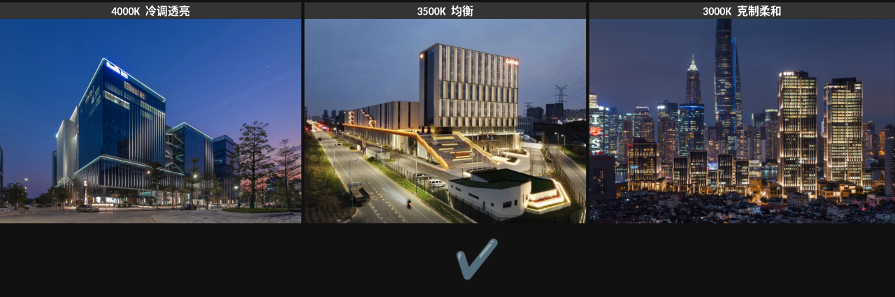
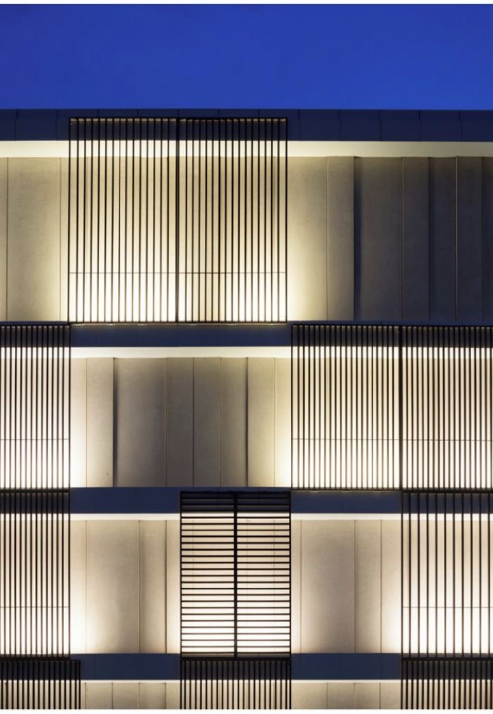
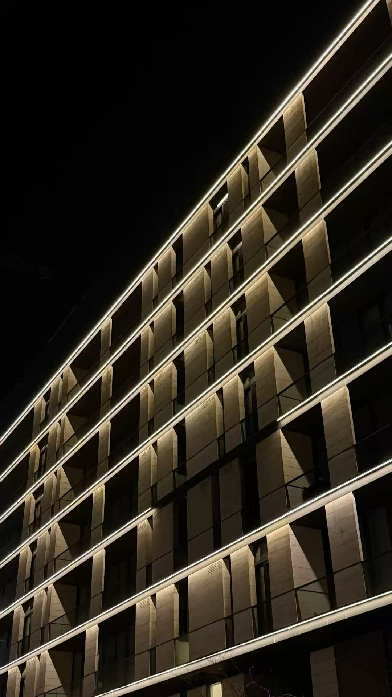

Strategic Interface
戰略界面
河套以「一河兩岸、一區兩園」連接深圳產業轉化能力與香港國際科研資源，形成大灣區創新協作的關鍵平台。
Concept Bid Presentation / Architectural Facade Lighting
Lighting Concept for the New Passenger Inspection Building,
Hetao Shenzhen-Hong Kong Innovation Zone
Project Background / 項目背景
Hetao is not defined by separation. It is a platform of connection, research exchange, industrial translation and cross-border collaboration.
河套以「一河兩岸、一區兩園」連接深圳產業轉化能力與香港國際科研資源，形成大灣區創新協作的關鍵平台。
新旅檢大樓是科研人員、企業訪客及園區運營流線進入合作區的第一夜間界面。
照明需同時建立城市識別、入口辨識、通關秩序與旅客導向，克制但不可過暗。
Design Concept / 設計概念
Light of Order, Gateway of Collaboration
河套的核心價值不在「邊界」，而在「連接」：連接深圳與香港，連接內地創新製造體系與香港國際科研資源。
夜間照明不作炫目地標，而作清晰、高效、可信賴的科技園門戶。
以 克制、精確、低眩光、重層次 的外立面光環境，支撐高人流旅檢建築的入口識別、流線引導與穩定運營。
Color Temperature Strategy / 色溫策略
旅檢建築需要清晰、可信賴、利於識別的公共光環境；同時，河套科技園的夜間門戶不宜過冷或過度商業化。 因此，本方案建議以 3500K 作為主體色溫，在 4000K 的透亮效率與 3000K 的柔和克制之間建立更穩定的中性平衡。

Scheme 01 / 主推方案
底部連續線性上照與豎向光序

以格柵底部水平燈槽形成連續上照，通過槽內反射與分段控制建立豎向光序；重點是低眩光、可控亮度與構造一體化，而非外露燈帶。
Scheme 02 / 備選方案
層間下照與水平秩序

以層間頂部或樓板底部的隱藏線性下照形成水平光層，重點是控制亮度、避免每層外露勾邊，讓建築呈現穩定而克制的公共建築秩序。
Scheme 03 / 備選方案
內透光與門戶框架
以入口玻璃界面、門廊頂棚與基座內透光建立夜間可讀性，讓主要光環境服務旅客到達、排隊、識別與通行，而不是上部立面表演。
Scheme Relationship / 方案關係
Scheme 01 remains the clearest facade identity. Scheme 02 provides a quieter point-source rhythm. Scheme 03 focuses on gateway operation and arrival. Loading below is a concept-stage allowance for main façade and entrance feature lighting only.
主推方案 / Recommended
備選方案 / Alternative
備選方案 / Alternative
Preliminary feature lighting load allowance only. Excludes interior functional lighting, road lighting, landscape lighting, bridge lighting, emergency lighting, signage and final electrical redundancy.